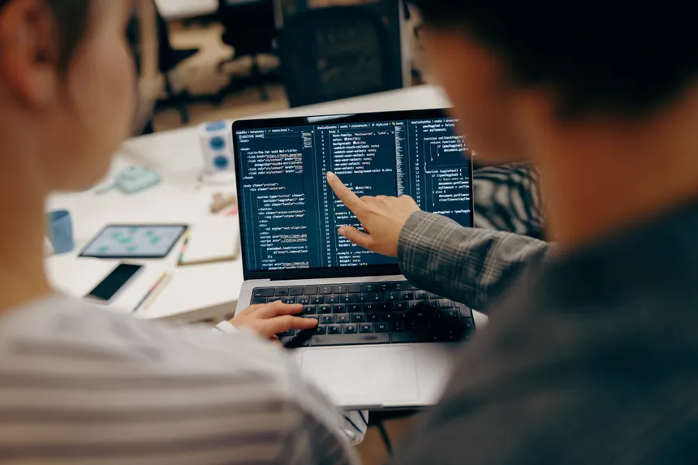
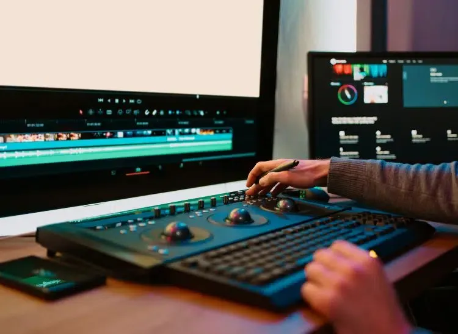

¡Bienvenido a mi Portfolio!
Welcome, I invite you all...
C'est moi!
Soy Iván. Soy un estudiante de Desarrollo de Aplicaciones Web, especializado en el FrontEnd y en el BackEnd de aplicaciones web, además de tener una curiosidad natural hacia el aprendizaje de idiomas y las producciones audiovisuales. A medida en que se avanza por este portfolio, se puede apreciar mi perfil más profundamente.
Programación e Informática
Primero, resuelve el problema, después, prográmalo -John Johnson
Estudiante de Desarrollo de Aplicaciones Web con una ligera inclinación hacia el FrontEnd. Programador en C++, Java, JavaScript, Python, además de manejar habitualmente HTML, CSS, y lenguajes SQL.
Idiomas
El aprendizaje de idiomas es una de mis más grandes pasiones, siendo cuatrilíngüe en el castellano, catalán, inglés, y portugués. Además de tener una experiencia laboral en la materia.
Edición Audiovisual
Suelo especializarme en editories de vídeo como Camtasia, CapCut, Sony Vegas, o DaVinci Resolve, además de editores de imagen como Paint.net, PhotoShop, o Pixlr.
Proyectos
Suelo involucrarme o iniciar por cuenta propia varios proyectos relacionados con las materias anteriormente mencionadas